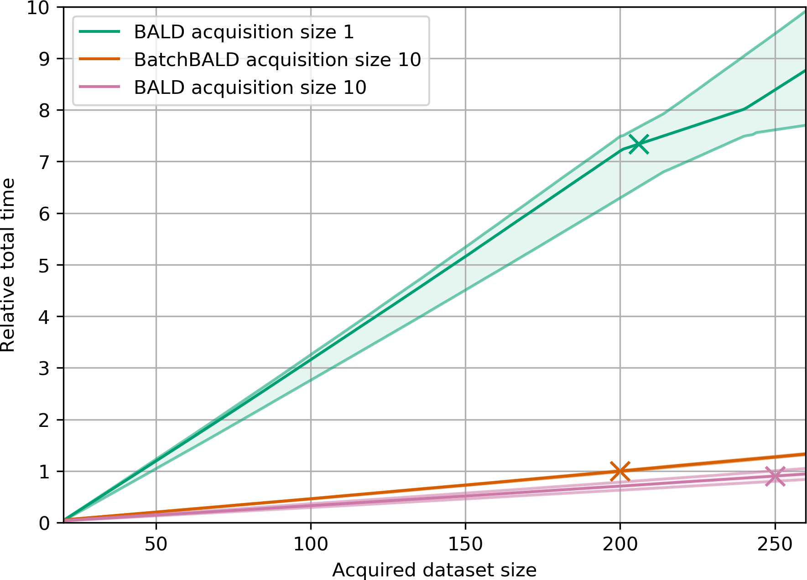
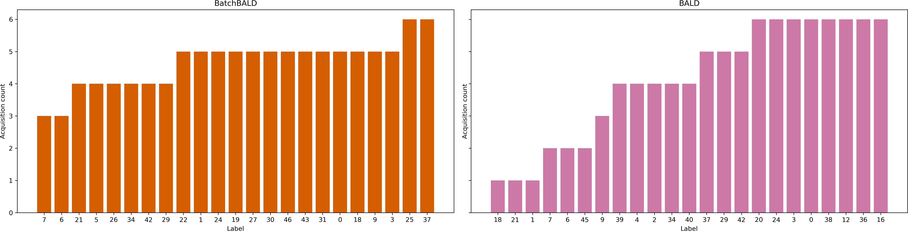

TLDR: With Active Learning, we can make machine learning applicable when labelling costs would be too high otherwise.
In our paper
, we present BatchBALD: a new practical method for choosing batches of informative points in Active Learning which
avoids redundancies that plague existing methods. Our approach is based on information theory and expands
on useful intuitions. We have also made our implementation available on GitHub:
https://github.com/BlackHC/BatchBALD.
What's Active Learning?
Using deep learning and a large labelled dataset, we are able to obtain excellent performance on a range
of important tasks. Often, we have access to a large unlabelled dataset. For example, it is easy to acquire lots of
stock photos, but labelling these images is time consuming and expensive.
This excludes many applications from benefiting of the recent advances in
deep learning.
In Active Learning, we only ask experts to label the most informative data points instead of
labelling the whole dataset upfront. The model is then retrained using these newly
labelled data points and all previously acquired data points. This process is repeated until we are happy with
the accuracy of our model.
To perform Active Learning, we need to define some measure of informativeness,
which is often done in the form of an acquisition function. This measure is called an "acquisition function"
because the score it computes determines which data points we want to acquire and ask an expert to label.
The problem is...
Usually, the informativeness of unlabelled points is assessed individually,
with one popular acquisition function being BALD .
However, assessing informativeness individually can lead to extreme waste because a single informative point can have lots of (near-identical) copies.
This means that if we naively acquire the top-K most informative points,
we might end up asking an expert to label K near identical points!
Figure 1:BALD scores (informativeness) for 1000 randomly-chosen points on the MNIST dataset
(hand-written digits).
If we were to pick the top scoring points (e.g. y value above 0.6),
most of them would be 8s (█), even though we can assume that after the first
couple of them our model would consider them less informative than other available data.
The points are colour-coded by digit label and sorted by score.
Points are slightly shifted on the x-axis by digit label to avoid overlaps.
The model used for scoring has been trained to 90% accuracy first.
Our contribution
In our work, we efficiently expand the notion of acquisition function to batches (sets) of data points, and develop a new
acquisition function that takes into account similarities between data points. For this, we take the
commonly-used
BALD acquisition function and extend it to BatchBALD in a grounded way,
which we will explain below.
However, knowing how to score batches of points is not sufficient!
We still have the challenge of finding the batch with the highest score.
The naive solution would be to try all subsets of data points,
but that wouldn't work because there are exponentially many possibilities.
For our acquisition function, we found that it satisfies a very useful property called "submodularity" which allows us to follow a
greedy approach to find a subset that is good enough. A greedy
approach acquires points one by one, and conditions each new point on all
points previously added to the batch.
Overall, this leads to our acquisition function BatchBALD outperforming BALD: it needs fewer iterations
and fewer data points to reach high accuracy for similar batch sizes,
significantly reducing redundant model retraining and expert labelling hence cost and time.
Moreover, it is empirically as good as, but much faster than, the optimal choice of acquiring individual points sequentially,
where we retrain the model after every single point acquisition.
(a)Performance on MNIST. BatchBALD outperforms BALD
with acquisition size 10 and performs
close to the optimum of acquisition size 1

(b)Relative total time on MNIST. Normalized to
training BatchBALD with acquisition size 10 to 95% accuracy. The stars mark when 95% accuracy is reached
for each method.
Figure 3:Performance and training duration of BALD and BatchBALD on MNIST.
BatchBALD with acquisition size 10 performs no different than BALD with acquisition size 10,
but it only requires a fraction of the time because it needs to retrain the model fewer times.
Compared to BALD with acquisition size 10, BatchBALD also requires fewer acquisitions to reach 95% accuracy.
Before we explain our acquisition function, however, we need to understand what the BALD acquisition function does.
What's BALD?
BALD stands for "Bayesian Active Learning by Disagreement" .
As the "Bayesian" in the name tell us, this assumes a Bayesian setting which
allows us to capture uncertainties in the predictions of our model. In a
Bayesian model, the parameters are not just numbers (point estimates) that get updated
during training but probability distributions.
This allows the model to quantify its beliefs: a wide distributions for a parameter means that the model is
uncertain about its true value, whereas a narrow one quantifies high certainty.
BALD scores a data point $x$ based on how well the model's
predictions $y$ inform us about the model parameters
\boldsymbol{\omega}. For this, it computes the mutual information $ \mathbb{I}(y, \boldsymbol{\omega}) $.
Mutual information is well-known in information theory and captures the information overlap between quantities.
The BALD acquisition function for a batch of $b$ points is often expressed as:
a_{\mathrm{BALD}}\left(\left\{x_{1}, \ldots, x_{b}\right\}, \mathrm{p}\left(\boldsymbol{\omega} |
\mathcal{D}_{\mathrm{train}}\right)\right)
=\sum_{i=1}^{b} \mathbb{I}\left(y_{i} ; \boldsymbol{\omega} |
x_{i}, \mathcal{D}_{\mathrm{train}}\right).
Intuitively, if we imagine the information content of the predictions given some data points and the model
parameters as sets in the batch case, the mutual information can be seen as intersection of these sets, which
captures the notion that mutual information measures the information overlap.
In fact, Yeung
shows that this intuition is well-grounded, and we can define an information
measure $\mu^*$ that allows us to express information-theoretic quantities using set operations:
\begin{aligned}
\mathbb{H}(x,y) &= \mu^*(x \cup y) \\
\mathbb{I}(x,y) &= \mu^*(x \cap y) \\
\mathbb{E}_{p(y)} \mathbb{H}(x | y) &= \mu^*(x \setminus y)
\end{aligned}
Figure 4 visualizes the scores that BALD computes as area of the intersection of these
sets when acquiring a batch of 3 points. Because BALD is a simple sum, mutual information between data points is double-counted, and BALD
overestimates the true mutual information. This is why naively using BALD in
a dataset with lots of (near-identical) copies of the same point
will lead us to select all the copies: we double count the mutual information intersection between all!
BatchBALD
In order to avoid double-counting, we want to compute the quantity
\mu^*(\bigcup_i y_i \cap \boldsymbol{\omega})
, as depicted in figure 5, which corresponds to the mutual information
\mathbb{I}(y_1,...,y_b ; \boldsymbol{\omega} | x_1,...,x_b, \mathcal{D}_\mathrm{train})
between the joint of the $y_i$ and
\boldsymbol{\omega}
:
$$
a_{\mathrm{BatchBALD}}\left(\left\{x_{1}, \ldots, x_{b}\right\}, \mathrm{p}\left(\boldsymbol{\omega} |
\mathcal{D}_{\mathrm{train}}\right)\right)=\mathbb{I}\left(y_{1}, \ldots, y_{b} ; \boldsymbol{\omega} | x_{1},
\ldots, x_{b}, \mathcal{D}_{\mathrm{train}}\right).
$$
Expanding the definition of the mutual information, we obtain the difference between the following two terms:
$$
a_{\mathrm{BatchBALD}}\left(\left\{x_{1}, \ldots, x_{n}\right\}, \mathrm{p}(\boldsymbol{\omega} |
\mathcal{D}_{\mathrm{train}})\right)
= \mathbb{H}\left(y_{1}, \ldots, y_{n}\right | x_{1}, \ldots, x_{b},
\mathcal{D}_{\mathrm{train}})-\mathbb{E}_{\mathrm{p}(\boldsymbol{\omega} | \mathcal{D}_{\mathrm{train}}
)}\left[\mathbb{H}\left(y_{1}, \ldots, y_{n} | x_{1}, \ldots, x_{b}, \boldsymbol{\omega}\right)\right].
$$
The first term captures the general uncertainty of the model. The second term captures the expected uncertainty
for a given draw of the model parameters.
We can see that the score is going to be large when the model has different explanations for the data point
that it is confident about individually (yielding a small second term) but the predictions are disagreeing with each other
(yielding a large first term), hence the "by Disagreement" in the name.
Submodularity
Now to determine which data points to acquire, we are going to use submodularity.
Submodularity tells us that there are diminishing returns: selecting two points increases the score more than just
adding either one of them, but less than the separate improvements together:
Given a function $f: \Omega \to \mathbb{R}$, we call $f$ submodular, if:
$$
f(A \cup \{x, y\}) - f(A) \ge
\left ( f(A \cup \{x\}) - f(A) \right ) +
\left ( f(A \cup \{y\}) - f(A) \right ),
$$
for all $A \subseteq \Omega$ and elements $x,y \in \Omega$.
We show in Appendix A of the paper that our acquisition function fulfils this property.
Nemhauser et al.
have shown that one can then use a greedy algorithm to pick points with a guarantee that their score is at least
$1-1/e \approx 63\%$ as good as the optimal one. Such an algorithm is called $1-1/e$-approximate.
The greedy algorithm starts with an empty batch $A = \{\}$ and computes $a_{\mathrm{BatchBALD}}(A \cup \{x\})$ for
all available data points, adds
the highest-scoring $x$ to $A$ and repeats this process until $A$ is of acquisition size.
This is explained in more detail in the paper.
Consistent MC Dropout
We implement Bayesian neural networks using MC dropout .
However, as an important difference to
other implementations, we require consistent MC dropout: to be able to compute the joint entropies between data
points, we need to compute $a_{\mathrm{BatchBALD}}$ using the same sampled model parameters.
To see why, we have investigated how the scores change with different sets of sampled model parameters being used in
MC dropout inference in figure 6.
Without consistent MC dropout, scores would be sampled using different sets of sampled model parameters and would
essentially be no different than random acquisition given the spread of their scores.
Figure 6:BatchBALD scores for different sets of 100 sampled model parameters. This shows the BatchBALD
scores
for a 1000 randomly picked points out of the pool set while selecting the 10th point in a batch for an MNIST model
that has already reached 90% accuracy. The scores for a single set of 100 model parameters is shown in blue. The
BatchBALD estimates show strong banding with the offsets between different sets of sampled parameters being larger
than the differences between different data points for a given set.
Experiments on MNIST, Repeated MNIST and EMNIST
We have run experiments on classifying EMNIST, which is a dataset of handwritten letters and digits consisting of 47
classes and 120000 data points.
Figure 7:Examples of all 47 classes of EMNIST.
We are better than BALD which performs even worse than random acquisition.
Figure 8:Performance on EMNIST. BatchBALD
consistently outperforms both random acquisition and
BALD while BALD is unable to beat random acquisition.
To understand better how the acquired data points differ, we can look at the acquired class labels and compute
the entropy of their distribution. The higher the entropy, the more diverse they are, and indeed it looks good.
Figure 9:Entropy of acquired class labels over acquisition steps on EMNIST.
BatchBALD steadily acquires a more diverse set of data points.
Finally, to understand this in more detail, we also looked at the actual distribution of acquired classes
at the end and
found
that BALD undersamples some classes while BatchBALD manages to pick data points from different classes more
uniformly
(without knowing the classes, of course).
Random acquisition also picks classes more uniformly than BALD, but not
as
well as BatchBALD.
Figure 13:Histogram of acquired class labels on EMNIST.
BatchBALD left, random acquisition center, and BALD right. Classes are sorted by number of acquisitions.
Several EMNIST classes are underrepresented in BALD and random acquisition while BatchBALD acquires classes
more uniformly.
The histograms were created from all acquired points.

Figure 10:Histogram of acquired class labels on EMNIST.
BatchBALD left and BALD right. Classes are sorted by number of acquisitions,
and only the lower half is shown for clarity. Several EMNIST classes are
underrepresented in BALD while BatchBALD acquires classes more uniformly.
The histograms were created from all acquired points.
To see how much better BatchBALD copes with pathological cases, we also experimented with a version of MNIST that
we
call Repeated MNIST.
It simply is MNIST repeated 3 time with some added Gaussian noise, and shows how BALD falls into a trap where picking the top $b$
individual points is detrimental because there are too many similar points.
But BALD is not the only acquisition
function to fail in this regime.
Figure 14:Performance on Repeated MNIST
BALD, BatchBALD, Var Ratios, Mean STD and random acquisition: acquisition size 10 with 10 MC dropout samples.
Figure 11:Performance on Repeated MNIST with acquisition size 10.
BatchBALD outperforms BALD while BALD performs worse than random
acquisition due to the replications in the dataset.
We also played around with different acquisition sizes and found that on MNIST, BatchBALD can even acquire 40 points
at a time with little loss of data efficiency while BALD does not.
(BALD)(BatchBALD)Figure 12:Performance on MNIST for increasing acquisition sizes.
BALD’s performance drops drastically as
the acquisition size increases. BatchBALD maintains strong performance even with increasing acquisition size